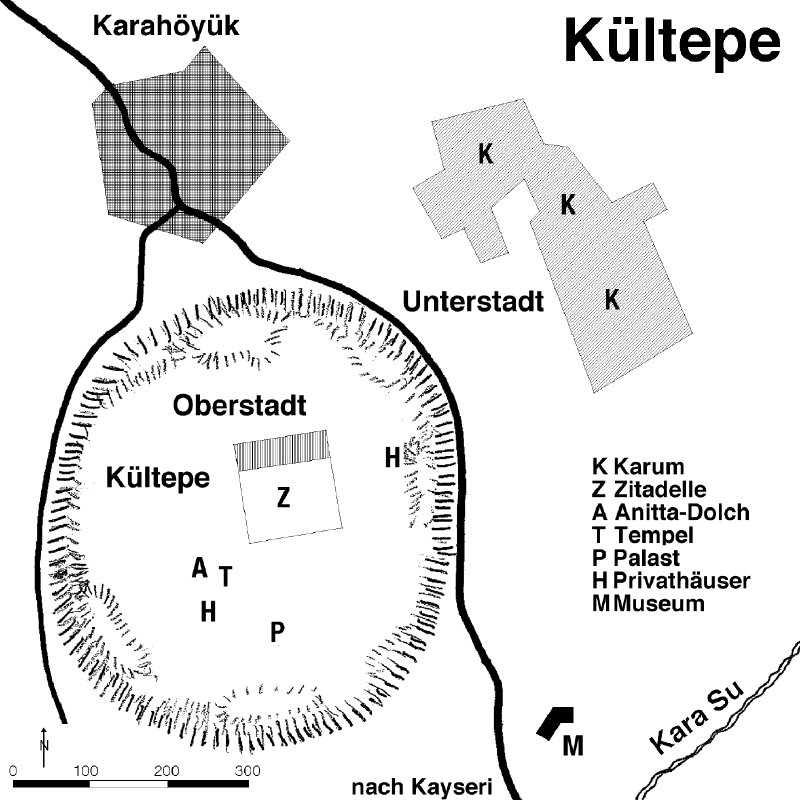

ⓘ
ⓘ所在地 Kocasinan, カイセリ地方 中央アナトリア地方種類 遺跡時代 青銅器時代
カイセリ近くのキュルテペは、古代にカネシュまたはネシャと呼ばれた大きな遺丘で、アナトリアの文字の歴史が始まった場所とされています。約4千年前、アッシリアの商人たちがそのふもとに交易植民地「カールム」を築き、錫と織物を持ち込み、アナトリアの銀と金を持ち帰りました。何万枚もの楔形文字粘土板に、家族の手紙、貸付、婚姻契約、裁判が記録されており、世界最古級の商業文書群です。現地では住居の基礎や宮殿の遺構を見ることができます。
この文章は AI で翻訳されています。
遺跡平面図

平面図: Al-qamar · CC BY-SA 3.0 · Wikimedia Commons
よくある質問
キュルテペ遺跡はどこにありますか？
キュルテペ遺跡はKocasinan, カイセリ（中央アナトリア地方）にあります。行き方はこのページの地図または経路ボタンをご利用ください。
キュルテペ遺跡の見学にはどのくらい時間がかかりますか？
平均見学時間：1.5〜3時間。
キュルテペ遺跡でミュージアムパスは使えますか？
文化観光省が管理する博物館・遺跡で通常利用できます.
キュルテペ遺跡はどの時代のものですか？
キュルテペ遺跡は青銅器時代の時代のものです。
キュルテペ遺跡の近くには他に何がありますか？
近くの文化スポット：カイセリ・アタテュルクの家博物館 (~16 km), サーヒビエ・メドレセ (~16 km), カイセリ城 (~16 km)。
キュルテペ遺跡に音声ガイドはありますか？
はい。このページの「聴く」ボタンで、日本語を含む8か国語で紹介を聴くことができます。
♿ バリアフリー情報
この場所の確認済みバリアフリー情報はまだありません。来訪者や博物館から情報を集め、確認後にここに掲載します。
文化観光省が管理する博物館と遺跡では、障害のある方と付き添いの方1名は、証明書を提示すると無料で入場できます。訪問前に最新の条件をご確認ください。 バリアフリーガイド →
♿ バリアフリー情報を送る
関連ガイド
写真
周辺の宿泊施設とレストラン
あなたのお店をここに掲載しませんか？ 広告掲載